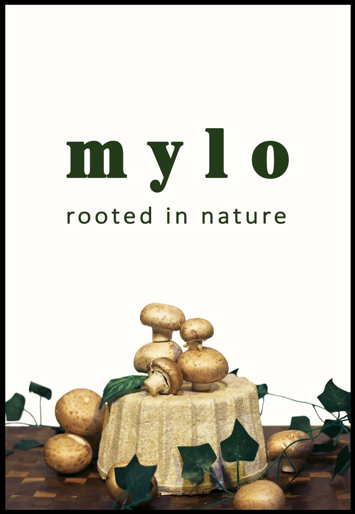
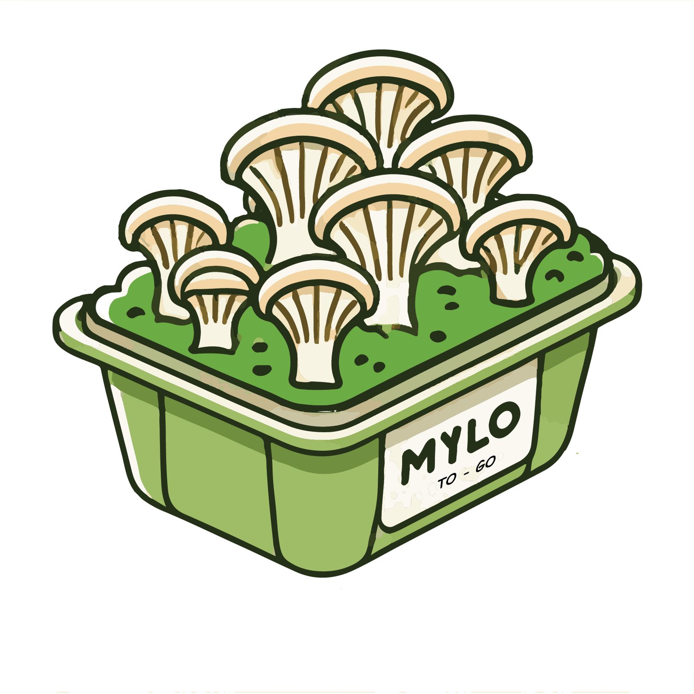

ArtD 326 · University of Illinois Urbana-Champaign · 2025
Mylo To-Go
Takeout containers grown from mycelium rather than manufactured, designed to replace single-use Styrofoam and decompose without a trace.
The story
In a world drowning in plastic waste, our team turned to fungi. Mylo containers aren't just biodegradable; they're grown, and they break down naturally after use.
We took mycelium fabrication through its whole development cycle as a small team, ending with a full line: a rectangular to-go box, a round soup container and lid, a scaled square container and lid, and a scaled cup.
What I did
- Contributed to every stage: form development, mold fabrication, mycelium cultivation, visual documentation and iteration
Process
- Molds came from 3D prints, silicone and existing containers
- Dated photo series from February to April 2025 documents the grows
- A second batch that failed: to keep replacing single-use food items, we tried growing solo cups, using solo cups themselves as the molds. The mycelium couldn't get enough air to breathe, and the cups failed.
- Naming for fun: we named our mycelium "Mylo", which paired nicely with "to-go"
- Photoshoot: we staged a picnic to show the containers in use
Outcome
- Six finished products, a 27 × 39 in poster, a logo and tags, a vlog and a written report
- Shown at the ArtD 326 Spring 2025 exhibition (photo folder "ARTD 326 SP 25 Exhibition-selected"), where our stickers were popular at the table
Reflection
A great group project, helped by being clear about everyone's roles. I looked for fun in it again: naming our mycelium Mylo, making stickers that people at the exhibition loved, and staging a picnic for the photoshoot.
Drawings

